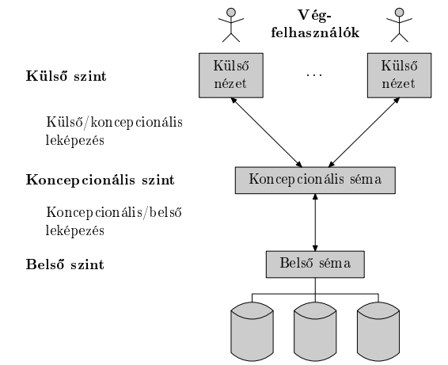
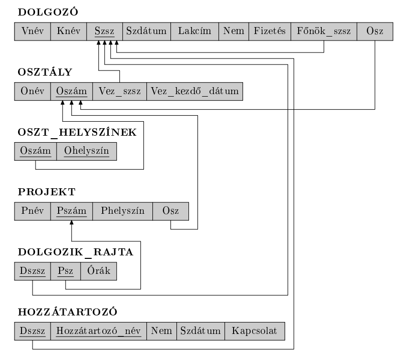
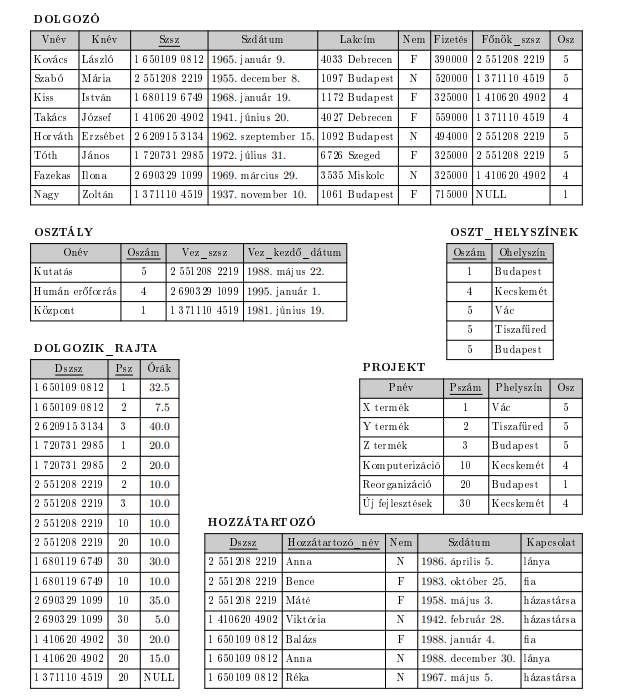
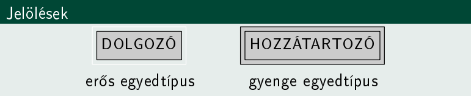
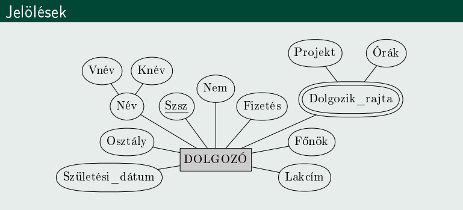
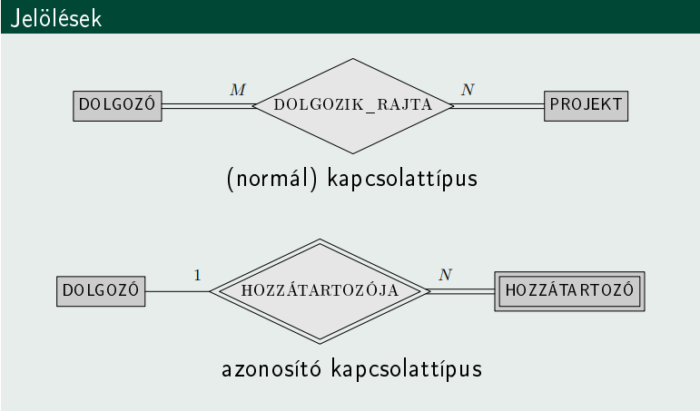
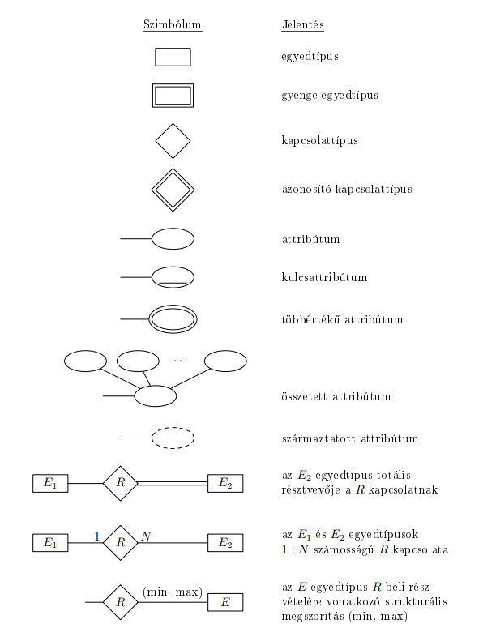
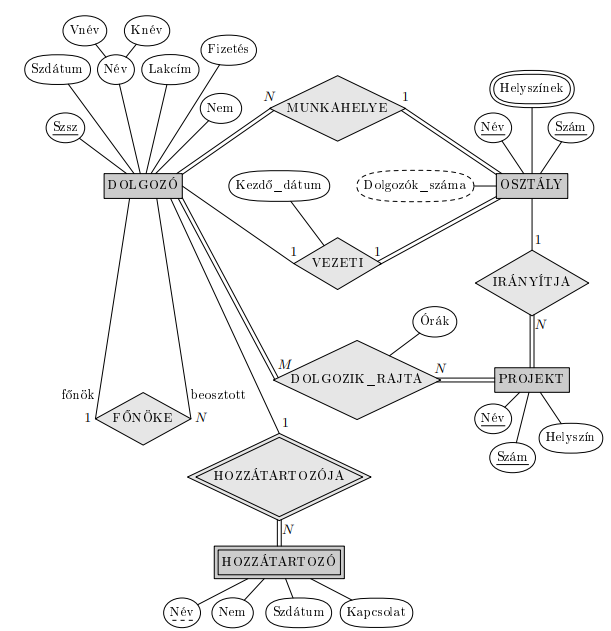

Adatbázis - egymással logikailag összefüggő egymáshoz kapcsolódó, belső jelentéssel lévő adatok összessége.
Speciális célra tervezett, felépített és közzétett adatok együttese.
Formálisan: adatmodell és egyettulajdonság/kapcsolat előfordulások összege
Adat - olyan ismert tény, amely számszerűsíthető és implicit (magától értetődő) jelentése van.
Kisvilág - a valós világ egy része, amelyről az adatbázis az adatokat tárolja.
Adatbázis-kezelő rendszer (DBMS) - olyan szoftvercsomag/rendszer, amely számítógépes adatbázisok létrehozását és karbantartását támogatja.
Adatbázisrendszer - A DBMS szoftver magával az adatokkal együtt. Néha az alkalmazásokat is beleértjük.
Adatmodell - fogalmak olyan összessége, amely leírja az adatbázis szerkezetét, azokat a műveleteket, melyekkel ez a szerkezet módosítható, és bizonyos megszorításokat, melyeket az adatbázisnak ki kell elégítenie.
Adatmodellek típusai:
Koncepcionális - olyan fogalmakkal dolgzoik, amelyek közel vannak ahhoz, ahogy a legtöbb felhasználó gondolkodik az adatokról.
Fizikai - olyan fogalmakkal dolgozik, amelyek azt írják le ahogy az adatok eltárolódnak a számítógépben.
Implementációs - olyan fogalmakkal dolgozik, amelyek a fenti két típus között helyezkednek el. A legtöbb DBMS implementáció ezt használja (pl. relációs).
DBMS sémák:
Belső séma: szerkezet és elérési utak fizikai tárolásának leírása.
Koncepcionális séma: a teljes adatbázis szerkezetének és megszorításainak leírása.
Külső séma: különböző felhasználói nézetzek leírása.

DBMS architektúrák:
Centralizált: egy helyen minden, DBMS, hardver, alkalmazói programok, távoli terminálokon keresztül érik el a felhasználók, a feldolgozás központosított.
Két rétegű kliens-szerver architektúra: több különböző célfeladatra dedikált szerverből és kliensekből áll. A kliensek szükség szerint érik el a szervereket.
Három rétegű kliens-szerver architektúra: általánosan elterjedt a webalkalmazások számára. A két réteg egy közbenső réteggel egészül ki, alkalmazás-szerver/web-szerver.
Egyed - a valós világnak azon eleme, mely a modellezés tárgyát képzi.
Egyedtípus - azonos tulajdonságokkal rendelkező egyedek absztrakciója
Tulajdonság - egyednek a modellezés szempontjából lényeges jellemzője
Tulajdonságtípus - azonos szerepű tulajdonságok absztrakciója
Kapcsolat - két vagy több egyedtípus közt fennálló viszony.
Kapcsolattípus - két, vagy több egyedtípus közt egyértelműen meghatározott viszony.
Bachmann-féle fogalomrendszer
| absztrakt | konkrét | |
|---|---|---|
| egyed | egyedtípus | egyed-előfordulás |
| tulajdonság | tulajdonságtípus | tulajdonság-előfordulás |
| kapcsolat | kapcoslattípus | kapcsolat-előfordulás |
Tulajdonságtípusok osztályzása
Szerkezet:
Hány értéket vehet fel egyszerre:
Tárolása:
NULL érték: nem alkalmazható, nem értelmezett.
Kapcsolattípusok osztályozása:
Alapfogalmak:
Sor/Rekord: Minden egyes sor adatelemei a modellezett kisvilág egy egyed-előfordulásáról vagy egy kapcsolat-előfordulásáról tartalmaznak adatokat.
Oszlop: minden egyes oszlop fejléccel rendelkezik, amely az illető oszlopban lévő adatok jelentéséről ad információt.
Relációséma: A relációséma azt írja le, hogy egy reláció milyen attribútumokból áll. Jelölése: ahol a reláció neve, pedig az attribútumok nevei. Minden attribútumhoz tartozik egy tartomány, amely megadja, hogy az adott attribútum milyen értékeket vehet fel; ezt az attribútum tartományának nevezzük, és -vel jelöljük. Az attribútumok száma a reláció foka.
Pl.:
Reláció: Egy relációsémához tartozó reláció a séma konkrét adatait tartalmazza. Ezt általában -rel vagy egyszerűen -rel jelöljük. A reláció rekordokból, más néven sorokból álló halmaz: . Minden rekord egy elemű rendezett lista, vagyis egy olyan -es, amelyben az egyes értékek megfelelnek a megfelelő attribútumok tartományának. Tehát ahol minden vagy az attribútum tartományából származik, vagy egy speciális érték.
Pl.:
Vagyis amíg a relációséma nem változik, addig a reláció mindig a valós világ pillanatnyi állapotát tükrözi.
Megszorítások csoportosítása:
Modellalapú / implicit: az adatok matematikai relációba szerveződnek
Sémaalapú / explicit: adatmodell sémáiban közvetlenül kifejezett megszorítások, pl. tartomány-, kulcs-, NULL-érték megszorítás
Szemantikus / üzleti megszorítások: mi számít értelmesen helyes adatnak, nem lehet leírni expliciten, pl. alkalamzott fizetése nem lehet nagyobb mint a menedzseré
Relációs adatbázisséma: relációséma-halmaz, valamint integritási megszorítások halmazának együttese.


ODB: objektumorientált adatbázis. Az adatokat objektumok formájában tárolja.
ODBMS: objektumorientált adatbázis-kezelő rendszer.
ORDBMS: objektum-relációs adatbázis-kezelő rendszer.
A hagyományos relációs adatbázis-kezelők objektumorientált bővítése.
Fő jellemző és előny:
Miért jelent meg:
OID (Object Identifier): objektumazonosító.
Minden objektumhoz tartozik egy egyedi azonosító, amely az objektum teljes élete során megmarad.
Perzisztencia: állandóság.
Az objektumok eltárolódnak az adatbázisban, később visszakereshetők, és más programokkal is megoszthatók.
Tranziencia: ideiglenesség.
A nem perzisztens objektumok csak átmenetileg léteznek.
Elnevezési mechanizmus: az objektum egy állandó névvel tehető elérhetővé.
Elérhetőségi mechanizmus: egy objektum akkor is perzisztens lehet, ha egy másik perzisztens objektumból hivatkozásokon keresztül elérhető.
Összetett objektumok támogatása:
az objektumok tetszőlegesen összetett szerkezetűek lehetnek, ezért az összetartozó információ nem feltétlenül szóródik szét sok relációba.
Extent: azonos típusú objektumok kollekciója.
Az extent célja, hogy az adott típus objektumait összefogja, és gyakran ezek perzisztens tárolását is biztosítsa.
Extentekre vonatkozó megszorítás:
az altípus extentje részhalmaza a szülőtípus extentjének.
Kapcsolatok kezelése:
az objektumok közötti kapcsolatok hivatkozásokkal is megadhatók, nem csak kulcsértékekkel.
Verziókezelés:
egy objektum időbeli történetének nyomon követése.
Sémaevolúció:
a séma módosíthatósága időben.
CAP tétel: egy elosztott rendszer az alábbi 3 alapvető képességből legfeljebb kettőt megvalósít:
Konzisztencia / Consistency: minden csomópont adott időpillanatban ugyanazt látja
Rendelkezésre állás / Availability: minden kérésre érkezik válasz (Sikeres / sikertelen)
Particionálástűrés / Partition Tolerance: a rendszer egy tetszőleges üzenet elvesztése, vagy a rendszer egy részének esetén is tovább működik
Lehetőségek:
Particionálástűrés elhagyása centralizált, minden egy helyen, skálázhatósági problémát okoz
Rendelkezésre állás elhagyása az érintett szolgáltatások megvárják egy esemény bekövetkezésekor, amíg az adatok konzisztenciája helyreáll, ezalatt elérhetetlenné válnak
Konzisztencia elhagyása ez írja le legjobban a valóságot, rendelkezésre állás fontosabb.
Konzisztenciafajták:
kliens oldali - hogyan figyeljük meg az adatok változását
szerver oldali - hogyan áramlanak a módosítások a rendszeren keresztül
erős konzisztencia - ha egy írási művelet sikeresen befejeződött, akkor az utána következő olvasások már mindenhol a legfrissebb értéket adják vissza.
gyenge konzisztencia - a rendszer nem garantálja, hogy egy későbbi olvasás már a legfrissebb értéket adja vissza,vagyis egy módosítás után egy ideig még régi érték is visszajöhet. Azt az időszakot, amíg a rendszer nem garantálja minden megfigyelő számára az új érték láthatóságát, inkonzisztenciaablaknak nevezzük.
esetleges konzisztencia - ha egy adaton egy idő után nem történik újabb módosítás, akkor előbb-utóbb minden olvasás ugyanazt, vagyis a legutolsó értéket fogja visszaadni.
ACID
Atomicity, Consistency, Isolation, Durability
Erős konzisztencia – az adatok mindig pontosak és egységesek
Pesszimista ütemezés – ütközések megelőzése zárolással
Bonyolult séma-evolúció – a struktúra nehezen változtatható
Commit központú működés – a tranzakciók vagy teljesen lefutnak, vagy visszagörgetés történik
Megbízható, de lassabb működés
BASE
Basically Available, Soft-state, Eventually consistent
Egyszerű és gyors – a sebesség és elérhetőség az elsődleges
Esetleges konzisztencia – az adatok idővel válnak egységessé
Optimista ütemezés – ütközések utólagos kezelése
Könnyű evolúció – rugalmas séma, gyors változtatások
Körülbelüli válaszok – elfogadható, ha nem teljesen pontos az eredmény
Kulcs-érték modell
Oszlopcsalád / BigTable modell
Dokumentum modell
Gráf modell
Alkalmazásorientált megközelítés – a séma és az adatstruktúra az alkalmazás igényeihez igazodik, nem fordítva
Mélyebb megértést igényel – a hatékony modell kialakításához ismerni kell az adatszerkezeteket és algoritmusokat
Adattöbbszörözés és denormalizáció az alapértelmezett – az adatok másolatban is tárolódhatnak a lekérdezések gyorsítása érdekében
Definíció: Az két attribútumhalmaza, és között, -nal jelölt funkcionális függés előír egy megszorítást azokra a lehetséges rekordokra, amelyek egy fölötti relációt alkothatnak. A megszorítás az, hogy bármely két, -beli és rekord esetén, amelyekre teljesül, teljesülnie kell -nak is.
Másképp: Egy relációban (táblában) funkcionális függés van két attribútumhalmaz között, ha az egyik csoport értékei egyértelműen meghatározzák a másik csoport értékeit. Azaz, ha két rekordban (sorban) az X attribútumok értékei megegyeznek, akkor a hozzájuk tartozó Y attribútumértékeknek is meg kell egyezniük.
Példa:
Tegyük fel, hogy van egy reláció (tábla) a diákokról:
| 1 | Anna Kovács | 2004-05-12 |
| 2 | Béla Nagy | 2003-10-21 |
Ebben:
Viszont a függés nem biztos, mert lehet több azonos nevű diák, különböző születési dátummal.
Ha egy relációra, -re meg van adva az a megszorítás, hogy bármely relációpéldányban nem szerepelhet két rekord ugyanazzal az attribútumhalmazzal,
akkor szuperkulcs -nek.
Ez azt is jelenti, hogy az értékek egyértelműen meghatároznak minden más attribútumot a relációban, tehát fennáll az attribútumhalmazainak bármely részhalmazára.
Másképp: ha szuperkulcs, akkor minden -ra igaz, hogy .
Fontos megjegyzések:
Ha teljesül, az nem feltétlen jelenti, hogy is igaz.
Ha mindkettő fennáll — tehát és is teljesül —, akkor kölcsönös funkcionális függésről beszélünk.
Ha pedig sem , sem nem igaz, akkor és funkcionálisan független attribútumhalmazok.
Armstrong axiómák:
Elemi:
reflexivitás: Ha , akkor
augmentivitás:
tranzitivitás:
Levezethető az elemiekből:
dekompozíció:
additivitás:
pszeudotranzitivitás:
A valós világ követelményeiből kiindulva készítjük el a szemantikailag helyes, DBMS-független adatmodellt.
Lépések:
Eredmény: Véges számú egyedtípusok, tulajdonságtípusok, kapcsolattípusok együttese.
Azokat az egyedtípusokat, amelyek nem rendelkeznek saját kulcsattribútumokkal, gyenge egyedtípusoknak nevezzük. Azokat az egyedtípusokat amelyeknek van kulcsattribútumuk, erős egyedtípusoknak nevezzük.

Az ER modell kezeli az egyszerű és összetett, az egyértékű és többértékű, valamint a tárolt és származtatott tulajdonságtípusokat.




ER modell leképzése:
Erős egyedtípusok leképzése
Gyenge egyedtípusok leképzése
Bináris 1:1 számosságú kapcsolatok leképzése
külső kulcs használata
összevonás
kereszthivatkozás v kapcsoló reláció használata
Bináris 1:N számosságú kapcsolattípusok leképzése
Bináris N:M számosságú kapcsolattípusok leképzése
Többértékű attribútumok leképzése
N-edfokú kapcsolattípusok leképzése
DDL (Data Definition Language) - Adatleíró nyelv
A DBA és adatbázis tervezők használják a koncepcionális sémák meghatározására.
Táblák, indexek, nézetek, megszorítások létrehozása/módosítása/törlése.
Példák: CREATE TABLE, ALTER TABLE, DROP TABLE, CREATE INDEX.
DML (Data Manipulation Language) - Adatmanipulációs nyelv
Az adatbázis tartalmának kezelésére szolgál: keresés, beszúrás, törlés, frissítés.
Halmazorientált (SQL) vagy rekordorientált nyelvek.
Példák: SELECT, INSERT, UPDATE, DELETE.
DCL (Data Control Language) - Adatvezérlő nyelv
Jogosultságok kezelésére: felhasználói fiókok, engedélyek adása/visszavonása.
Biztonsági feladatokra.
Példák: GRANT, REVOKE.
2025-ös adatb labor feladatok: itt